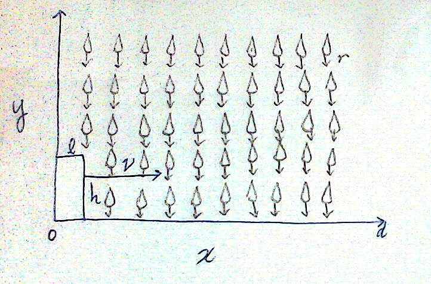
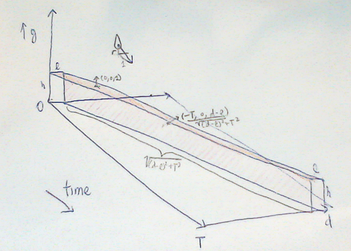

by Charles Zheng
It has started to rain, and you forgot your umbrella. Should you run? This question was posed by my classmates at Stanford. Intuitively, it seems that you will minimize your exposure to the rain by making your trip back home as short as possible. On the other hand, if you run very quickly, it seems plausible that you would start "running into" more raindrops in a horizontal direction. In the limit of infinite speed, you will hit every raindrop that is currently between you and your destination. So, is there an "optimal" speed to run, which is not infinite? This is a puzzle suitable for a introductory physics class.
Here is how I have decided to model the problem. You are represented modelled by a box with width l and height h in a two-dimensional space. The starting location is (0,0) and the destination is (d,0). The box moves at speed v until the right edge of the box reaches d. Meanwhile, rain is hitting the top edge and the right edge of the box. The rain is considered to be "uniformly distributed" in the two-dimensional space, and is falling downwards with velocity r.

Introduce the third dimension of time, t. Let T be the total time the box takes, (so v = (d-l)/T). Then we can plot the trajectory of the box and the rain particles in a 3d plot:

The top edge of the box traces out a parallelogram of length l and height T, and normal vector (0,-1,0). The right edge of the box traces out a parallelogram of length L = √((d-l)2 + T2), with normal vector (T,0,l-d)/L. In this three-dimensional space, the rainfall can be represented as a vector field where the direction at every point in the space is (0,-r,1). Since we only care about the relative amount of exposure to the rain, the global scaling of the vector field does not matter.
The total exposure to rain is equal to the total flux of the two parallelograms in this vector field. The flux of the parallelogram traced out by the top edge is rlT. The flux of the parallelogram traced out by the right edge is h(d-l). Hence the total flux is lrT + h(d-l). This is clearly minimized by T=0, which results in the minimum flux h(d-l). Hence you should run as fast as possible.
The reader can check that adding an x velocity component to the rain (slanted rain) does not change the conclusion; nor does adding a third spatial dimension.
A rainy Halloween in Stanford, 2014.